1,472세대
예정2차 모집 안내제공 자료 기준 · 2026.09
SEODONGTAN STATION · LANDMARK CITY
서동탄역 생활권
10년 민간임대
59㎡·84㎡, 총 1,472세대 예정 규모.
사업의 조건과 현재 단계를 먼저 확인하고 상담하세요.
예정 규모1,472세대
주거 타입59㎡ · 84㎡
사업 위치오산시 외삼미동
상담 신청은 계약·동호수 지정·방문 예약이 완료되는 절차가 아닙니다.
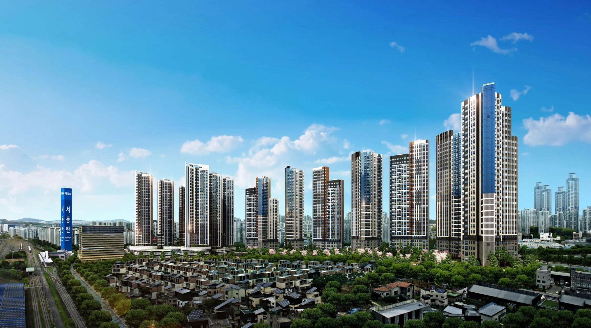
01 · 사업 개요
광고 문구보다 먼저,
사업의 기본부터.
서동탄역 랜시티가 어떤 사업인지 핵심 정보만 간결하게 정리했습니다.
59·84㎡
2개 타입 계획8~10년
사업 안내 기준2027.10
예정- 사업 유형
- 협동조합형 민간임대 사업
- 대지 위치
- 경기도 오산시 외삼미동 228번지 일원
- 공급 계획
- 59㎡ 303세대 · 84㎡ 1,169세대
- 주거 계획
- 공동주택·주상복합 · 최고 29층 계획
자료 기준
2026년 9월 제공 사업자료. 본 계획은 심의 등 인허가 과정 및 실시설계에서 변경될 수 있습니다.
60초 영상
글보다 빠르게,
영상으로 먼저 확인.
서동탄역 랜시티가 궁금하다면 짧은 영상으로 먼저 살펴보세요. 영상을 본 뒤 관심 타입과 참여 조건을 상담받을 수 있습니다.
버튼을 누르면 YouTube 앱 또는 새 창에서 영상이 재생됩니다.
▶SHORTS
서동탄역 랜시티60초 영상 보기
QUICK CONSULTATION
먼저 궁금한 것만 물어보세요.
관심 타입, 참여 조건, 납부 일정, 방문 상담을 안내합니다.
02 · 입지 환경
서동탄에서 누리는
동탄·병점 생활권.
반경 1km 안팎의 철도, 도로, 교육·생활시설을 중심으로 현재 이용 가능한 환경과 추진 중인 계획을 구분해 안내합니다.
1호선 서동탄역 생활권
서동탄역을 중심으로 병점과 동탄 생활권을 함께 살펴볼 수 있는 위치입니다.
경부고속도로 광역 이동
주변 도로망을 통해 수원·용인·화성 등 인접 생활권으로 이동할 수 있습니다.
교육·쇼핑·생활 인프라
학교, 대형마트, 공원 등 일상에 필요한 주변 시설을 함께 확인할 수 있습니다.
추진 중인 교통 계획
동탄도시철도 트램, 동탄인덕원선, 1호선 연장, GTX-C 병점 연장 등이 추진 중입니다.
사업 예정지경기도 오산시 외삼미동 228번지 일원
네이버 지도에서 확인 교통 계획의 구분과 출처 보기
예정 노선은 현재 운행 중인 노선과 구분됩니다. 노선·개통 목표·환승 계획은 관계기관 추진 상황에 따라 변경될 수 있습니다. 실제 이동 경로와 소요시간은 출발지와 이동수단에 따라 다릅니다.
03 · 민간임대 안내
장점만 말하지 않고,
확인할 조건까지 함께.
민간임대의 특징은 실제 계약 조건과 함께 판단해야 합니다.
장기 거주 계획
사업 안내 기준 8~10년 장기 임대 방식으로 계획됩니다.
참여 조건 확인
구체적인 자격과 참여 방식은 최신 모집 안내를 기준으로 확인합니다.
임대료 상승 제한
임대료 인상은 관련 기준에 따라 연 5% 이내로 안내됩니다.
자격 조건 상담
주택 소유·소득 수준 등 참여 조건은 최신 모집안내를 기준으로 확인합니다.
신축 주거 계획
59㎡·84㎡ 주거 타입과 커뮤니티 시설을 포함한 단지로 계획됩니다.
임대 종료 후 선택
임대 종료 후 선택 방식과 금액·권리는 실제 계약서를 확인해야 합니다.
계약 전 필수 확인
신청 자격, 임대기간 기산 시점, 출자금·임대보증금, 임대료, 임대 종료 후 선택 방식·금액, 추가 부담금은 최신 모집 안내와 실제 계약서를 기준으로 확인하세요.
04 · 공간 안내
생활 방식에 맞춰
59㎡와 84㎡.
UNIT 59㎡필요한 공간을
필요한 공간을
알차게 구성한 타입
가족의 생활 방식과 수납, 동선을 상담 시 함께 확인하세요.
59㎡ 견본주택
사진으로 확인하는 59㎡ 공간
거실부터 수납공간까지 주요 공간을 한눈에 살펴보세요.
한 장씩 좌우로 넘겨서 확인하세요
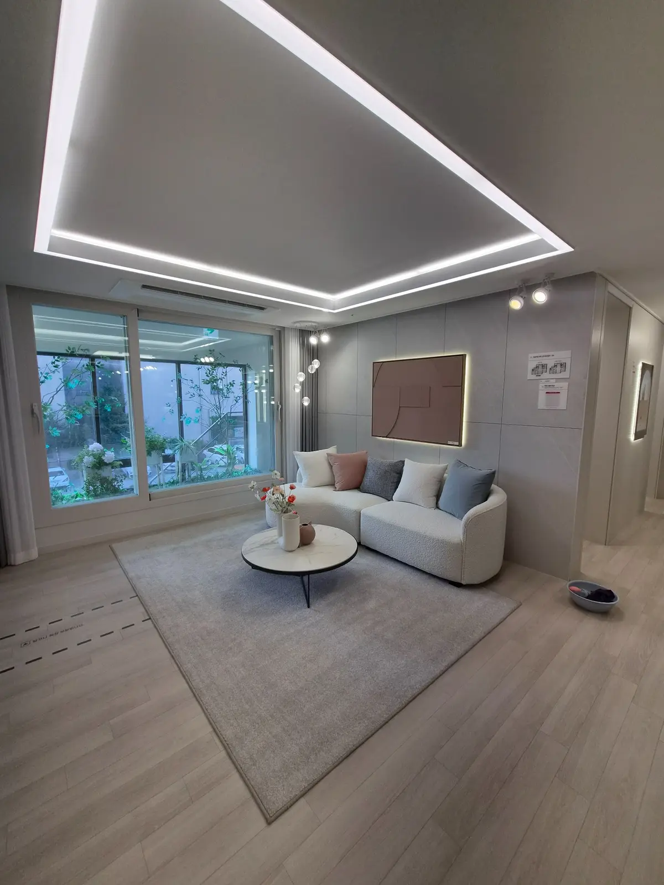
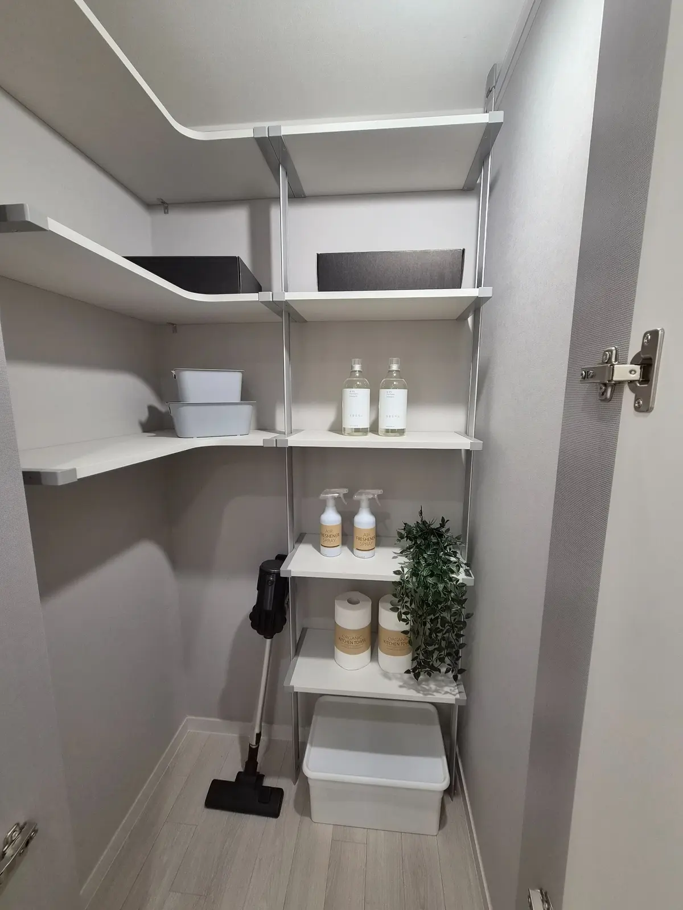
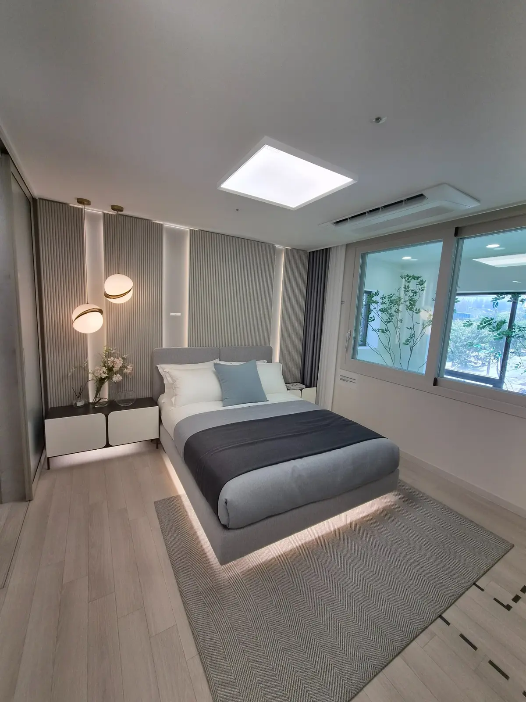
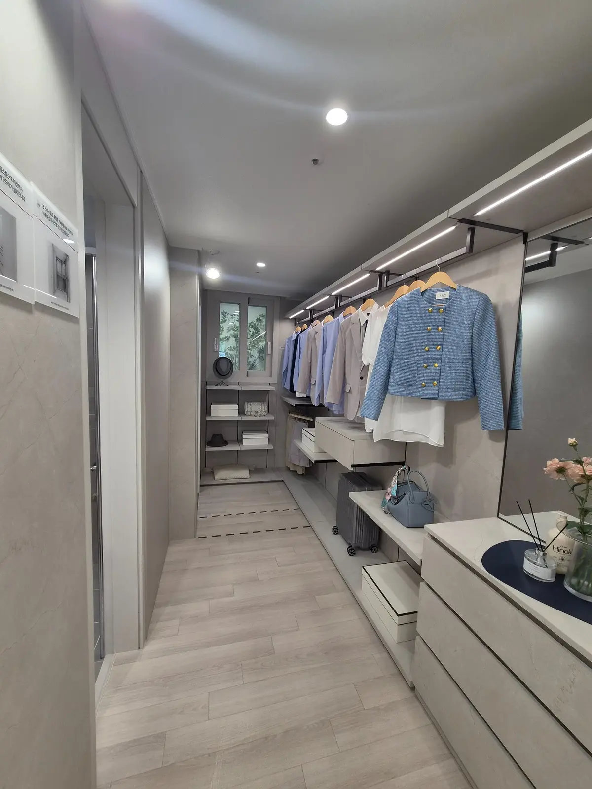
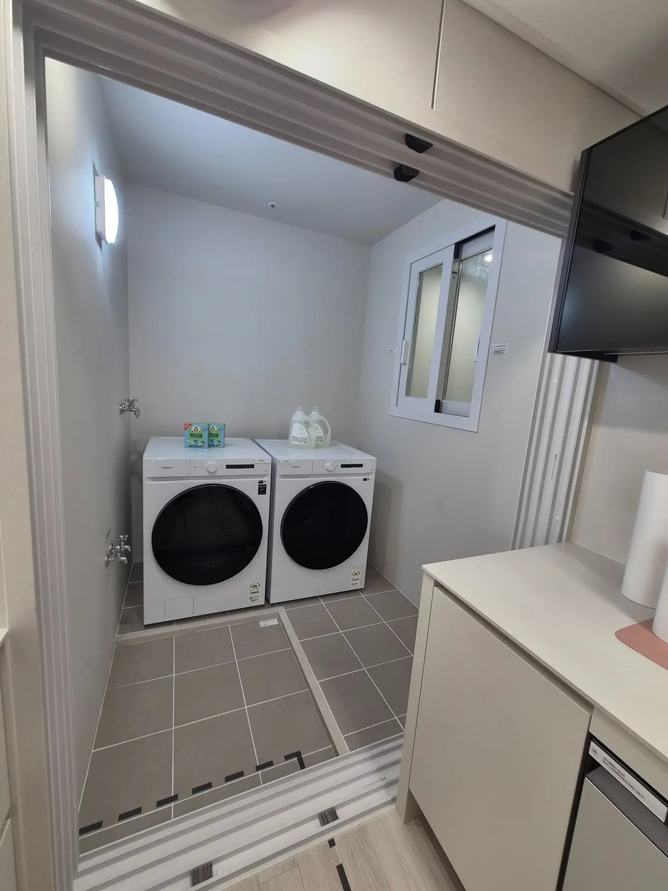
1 / 5
사진은 59㎡ 견본주택 촬영 이미지로 전시품·가구·가전·조명·마감재 등은 실제 제공 품목 및 시공 내용과 다를 수 있습니다.
84㎡ 견본주택
사진으로 확인하는 84㎡ 공간
거실, 주방, 방과 수납공간을 사진으로 확인하세요.
한 장씩 좌우로 넘겨서 확인하세요
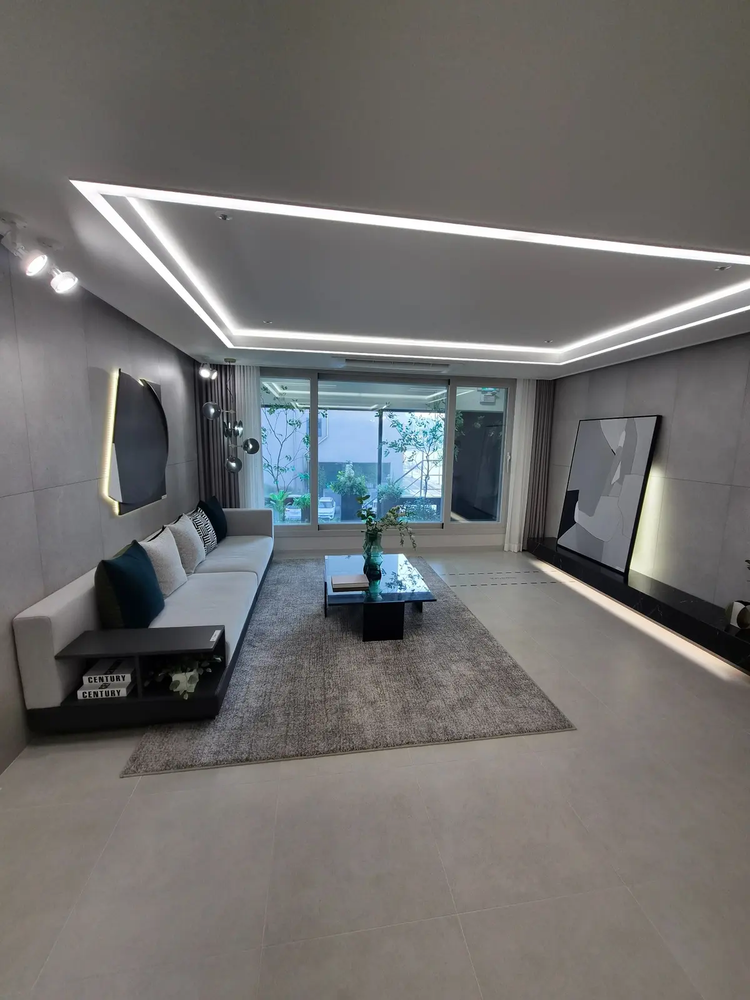
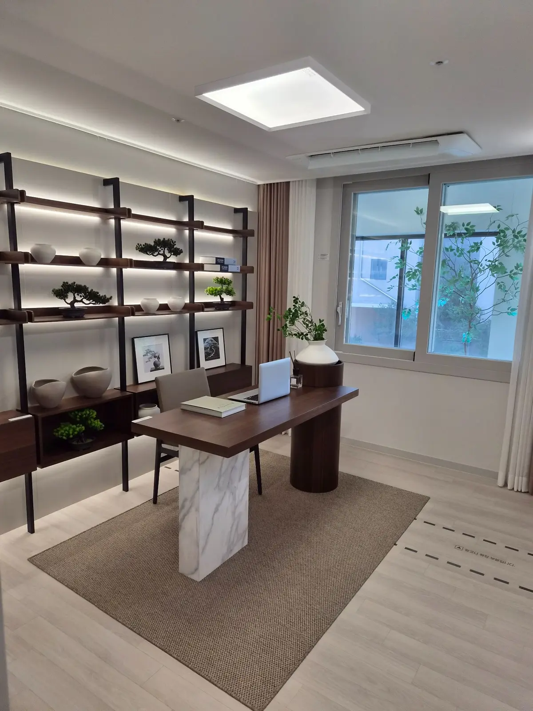
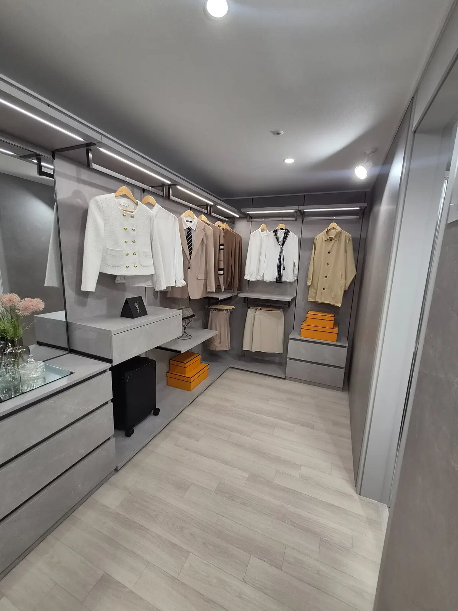
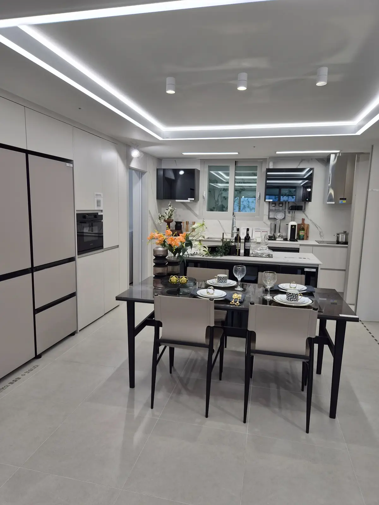
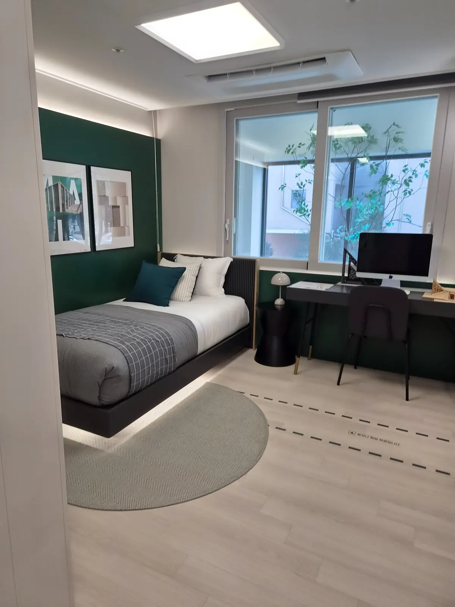
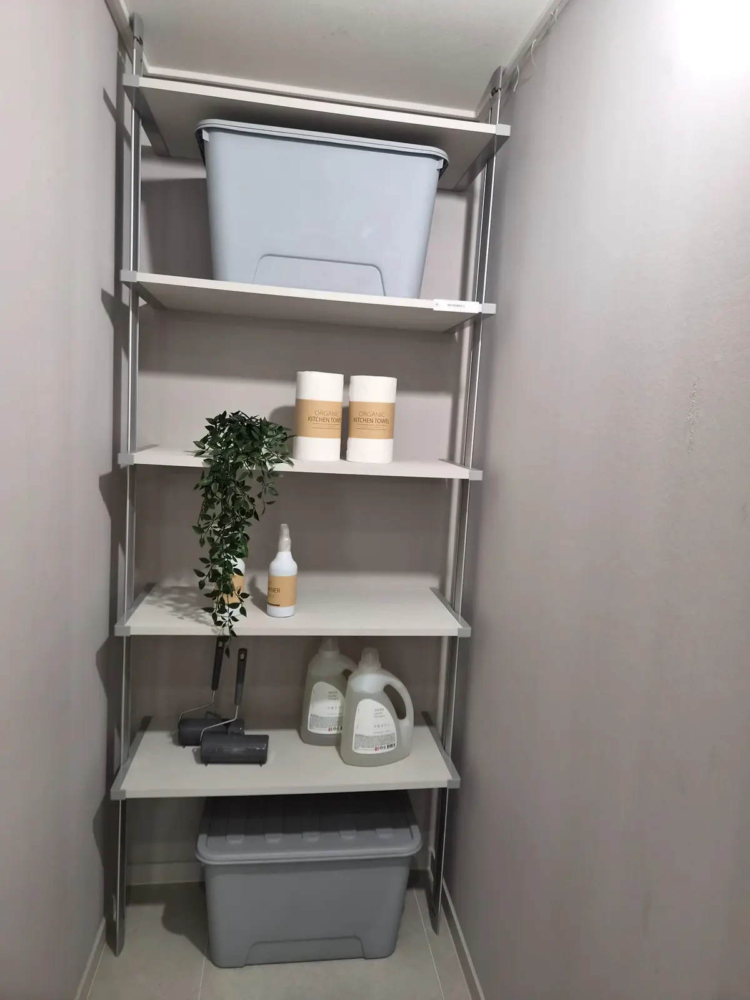
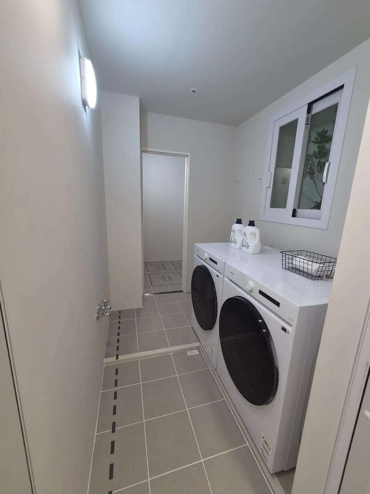
1 / 7
사진은 84㎡ 견본주택 촬영 이미지로 전시품·가구·가전·조명·마감재 등은 실제 제공 품목 및 시공 내용과 다를 수 있습니다.
평면 이미지는 이해를 돕기 위한 계획안입니다. 세부 면적·구조·옵션은 인허가 및 실시설계 과정에서 변경될 수 있습니다.
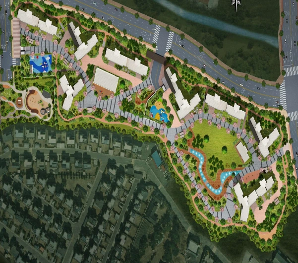
공동주택 단지배치 계획안05 · 추진 일정
현재와 예정,
구분해서 안내합니다.
- 사업 안내 기준도시개발 지구지정 고시 확인
- 2026년 하반기 예정실시계획인가 승인
- 2027년 10월 예정도시개발 착공
‘도시개발 착공’은 아파트 건축공사 착공과 다릅니다.
인허가 및 사업 추진 상황에 따라 일정은 변경될 수 있으며, 최신 진행 상황은 상담 시 확인해 주세요.
06 · 자주 묻는 질문
상담 전에 많이 묻는 내용
서동탄역 랜시티는 어떤 사업인가요?＋
오산시 외삼미동 228번지 일원에 계획된 협동조합형 민간임대 사업입니다. 59㎡·84㎡, 총 1,472세대 예정 규모로 안내되며 세부 계획은 인허가 과정에서 변경될 수 있습니다.
참여하려면 별도 통장이 필요한가요?＋
사업 안내상 별도 통장을 사용하지 않는 방식으로 안내됩니다. 구체적인 참여 조건과 자격은 최신 모집 안내를 기준으로 상담 시 확인해야 합니다.
임대 종료 후 선택 조건은 어떻게 되나요?＋
임대 종료 후 선택 방식, 가격, 시기, 추가 부담금은 실제 계약서의 내용을 반드시 확인해야 합니다.
현재 공사가 시작됐나요?＋
제공 자료 기준 도시개발 착공은 2027년 10월 예정입니다. 도시개발 착공과 아파트 건축공사 착공은 서로 다른 단계이며 일정은 변경될 수 있습니다.
상담 신청하면 계약이나 방문이 완료되나요?＋
아닙니다. 상담 신청은 안내 연락을 요청하는 절차입니다. 계약, 동·호수 지정, 홍보관 방문 예약은 담당자와 별도로 확인해야 하며 홍보관 방문은 사전 예약이 필요합니다.
계약 완료 고객 대상백화점상품권 10만원
상담 신청만으로 지급되는 혜택이 아닙니다. 대상·지급 시점·세부 조건은 상담 시 확인해 주세요.
CONSULTATION
궁금한 조건부터
확인해 보세요.
관심 타입과 연락처를 남기면 모집 현황, 참여 조건, 납부 일정, 방문 상담을 안내합니다.
전화상담1877-5547- 상담 신청은 계약을 의미하지 않습니다.
- 홍보관 방문은 사전 예약이 필요합니다.
- 개인정보 수집·이용 동의는 신청서에서 확인합니다.
ONLINE CONSULTATION
온라인 상담 신청
신청 화면에서 이름, 연락처, 관심 타입을 입력해 주세요.
상담 신청서 열기통화가 더 빠른가요?
휴대전화에서는 1877-5547을 누르면 바로 연결됩니다.